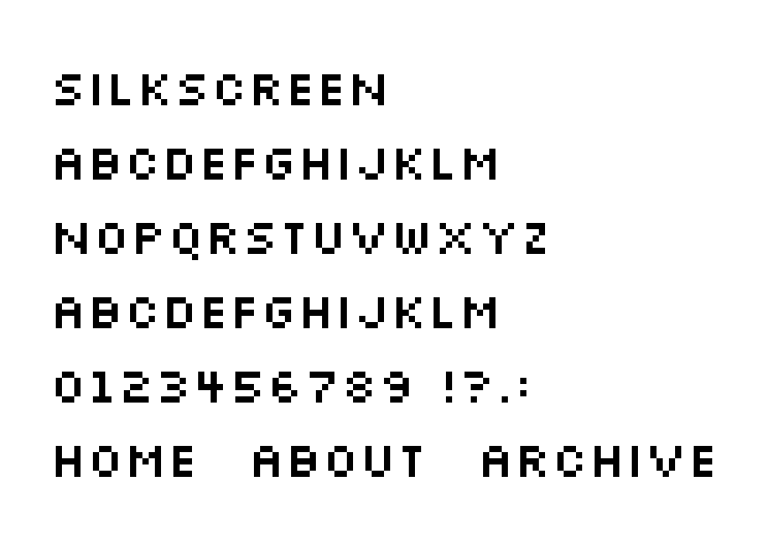

References / Typeface / 462
Silkscreen typeface
Jason Kottke’s tiny bitmap face for web graphics draws most capitals in 4 × 5 pixels and became a common pixel label face on websites of the 2000s.
- Source
- kottke.org: Silkscreen font
- Creator
- Jason Kottke
- Made
- Copyright 2001 per the OFL release; Commons calls the drawn version 1.1 “(2000)”
- Style
- Pixel Art (agent-proposed, not yet reviewed by a person)
- Moods
- Crisp, nostalgic, handmade
- Evidence
- Downloaded
Silkscreen-Regular.ttffrom the Google Fonts repository, rendered a specimen at its 8 pt design size without anti-aliasing, enlarged it 7× to 868 × 616 px, and inspected it. - Reviewed
- Rights
- Open license, stored. License: OFL-1.1. Rights policy
Context
Kottke calls Silkscreen “a typeface for your Web graphics” and says he drew the letters with the pencil tool in Photoshop 5.02, then built the font in Fontographer 3.52. Most characters are 4 × 5 pixels and the largest 5 × 5. It should be used at 8 pt or multiples of 8 pt. kottke.org.
Kottke lists Flickr, Sephora.com, Volvo Cars, and The Bourne Legacy among its uses. kottke.org.
The Google Fonts release names Jason Kottke as designer, the license OFL, and the copyright “2001 The Silkscreen Project Authors”, with source at googlefonts/silkscreen. Google Fonts repository.
Observed
- Capitals are 5 pixels high and mostly 4 pixels wide, with one-pixel strokes and two pixels of space between letters.
- The lowercase row renders as capitals: the face has no separate lowercase.
- The small letters read as a wide-spaced line of dots and bars, and they keep their shape only at whole-number enlargements.
- Digits and punctuation follow the same 5-pixel grid.
Why it belongs
Silkscreen is the label face of early-2000s pixel web graphics. Its tiny cell makes it a navigation and caption face rather than a heading face like Press Start 2P.
Borrow
Use a 5-pixel bitmap face in capitals for small navigation labels, and space the letters widely.
Set it at 8 px or a whole multiple, never at an in-between size.
Measured
Machine-extracted by tools/image-traits.py on . Full measurement.
- Mean chroma
- 0
- Palette
- #ffffff 90%
- #000000 4%
- #b8b8b8 1%
- #191919 1%
- #cdcdcd 1%
- #dfdfdf 1%
- #f0f0f0 1%
- #a3a3a3 1%

